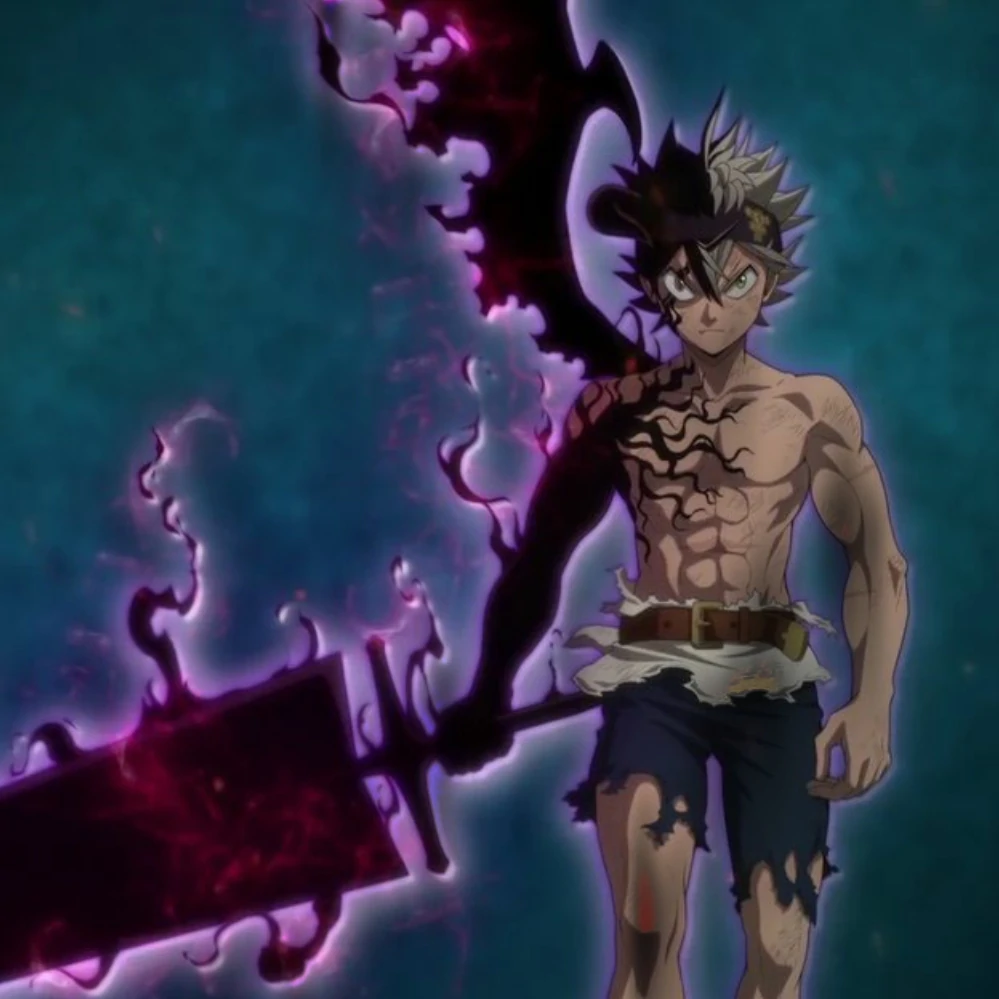
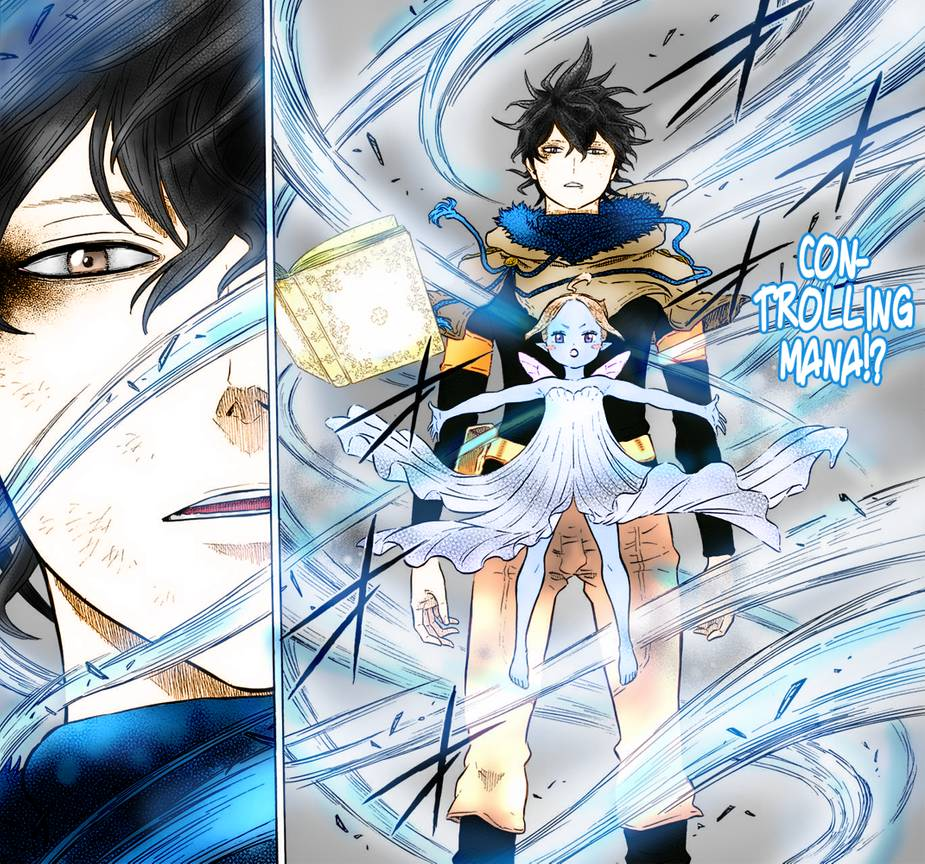

This is the main character Asta. He has no Magic but recieves the Demon book which allows him to use Anti-magic!

This is Yuno and he is Astas main rival in the show. Unlike Asta he is a mage with and abnormal amount of natural talent. The sprite beside him is the Wind Spirit-Slyph.